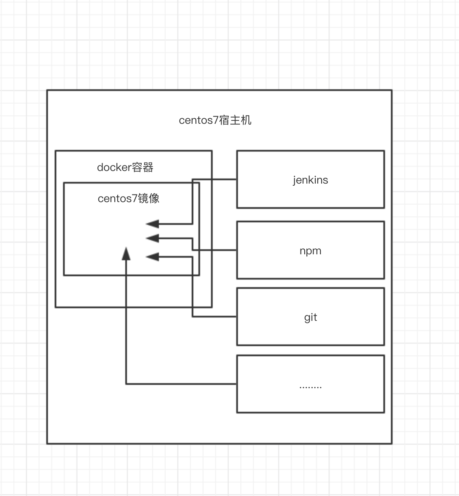
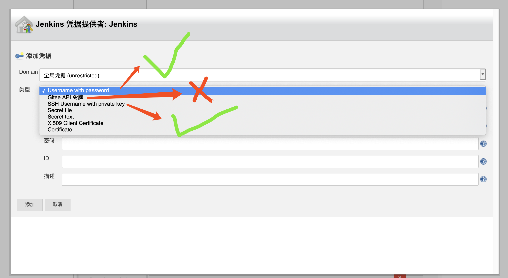

Jenkins
Jenkins是一款开源 CI&CD 软件，用于自动化各种任务，包括构建、测试和部署软件。详细可以参考这里。
安装环境
为了便于迁移，jenkins安装在docker中，但不是直接jenkins镜像安装，而是将jenkins构建在centos镜像中。
如下图

安装docker
# 安装依赖
sudo yum install -y yum-utils device-mapper-persistent-data lvm2
# 添加docker下载仓库
sudo yum-config-manager --add-repo https://download.docker.com/linux/centos/docker-ce.repo
# 安装docker-ce
sudo yum install docker-ce
#换国内源
vi /etc/docker/daemon.json
{
"registry-mirrors": ["https://registry.docker-cn.com"]
}
# 启动docker-ce
sudo systemctl start docker
# 验证
sudo docker --version安装docker-composer
Compose 是用于定义和运行多容器 Docker 应用程序的工具。通过 Compose，您可以使用 YML 文件来配置应用程序需要的所有服务。然后，使用一个命令，就可以从 YML 文件配置中创建并启动所有服务。
Compose 使用的三个步骤：
- 使用 Dockerfile 定义应用程序的环境。
- 使用 docker-compose.yml 定义构成应用程序的服务，这样它们可以在隔离环境中一起运行。
- 最后，执行 docker-compose up 命令来启动并运行整个应用程序。
sudo curl -L "https://github.com/docker/compose/releases/download/1.23.2/docker-compose-$(uname -s)-$(uname -m)" -o /usr/local/bin/docker-compose
sudo chmod +x /usr/local/bin/docker-compose
docker-compose --version制作centos自定义镜像
编辑dockerfile,vi dockerfile 文件内容为：
FROM centos:7
ENV PATH="/opt/bin:${PATH}"
RUN ln -sf /usr/share/zoneinfo/Asia/Shanghai /etc/localtime
RUN echo "Asia/Shanghai" >> /etc/timezone此镜像指定了centos7官方镜像，并指定的环境路径和时区为东八区
打包自定义镜像，将镜像名定为qt/centos7-cst-utf8
#生成镜像
docker build -t qt/centos7-cst-utf8 .
#查看docker已安装的镜像
docker images
#删除镜像
docker rmi hello-world下载jenkins.war和jdk
#新建目录
mkdir /home/jenkins
cd /home/jenkins
#下载jenkins.war和jdk
wget http://ftp-chi.osuosl.org/pub/jenkins/war/2.219/jenkins.war
wget https://download.oracle.com/otn/java/jdk/8u241-b07/1f5b5a70bf22433b84d0e960903adac8/jdk-8u241-linux-x64.tar.gz?AuthParam=1580906247_5e2e6badb6d413f9e1a577e1c635dda9下载jdk的时候AuthParam参数要重新去or
docker-composer配置
编辑docker-compose.yml,vi docker-compose.yml 文件内容为：
version: '3'
services:
jenkins:
container_name: jenkins
#image: centos:7
image: qt/centos7-cst-utf8
restart: always
privileged: true
ports:
- "18080:8080"
volumes:
- /home/jenkins:/opt
environment:
JAVA_HOME: "/opt/jdk"
JAVA_OPTS: "-Duser.timezone=Asia/Shanghai"
JENKINS_HOME: "/opt/jenkins"
command:
"/opt/jdk/bin/java -jar /opt/jenkins.war"该配置指定了镜像的8080端口映射到宿主机的18080端口，宿主机的文件卷/home/jenkins映射到镜像的/opt目录中，并制定了jdk等环境变量，最重要的是这个JENKINS_HOME环境变量，这个是jenkins指定的运行文件保存目录，这样可以把实例从镜像中剥离出来，方便迁移。"/opt/jdk/bin/java -jar /opt/jenkins.war"在docker-composer启动容器加载镜像的时候，启动jenkins。
启动docker
#启动所有服务
docker-compose up -d
#启动jenkins服务
docker-compose up -d jenkins
#查看启动的服务
docker-compose ps
#停止jenkins
docker-compose stop jenkins
#进入实例
docker-compose exec jenkins bashjenkins配置使用
第一次启动时会推荐安装各种插件，由于国内网络环境问题，很多插件会失败，可以插件管理中在切换国内的插件源
https://jenkins-zh.gitee.io/update-center-mirror/tsinghua/update-center.json
挂载npm、yarn环境
到各自官网下载npm、yarn已编译好的程序
cd /home/jenkins
wget https://npm.taobao.org/mirrors/node/v12.14.1/node-v12.14.1-linux-x64.tar.xz
wget https://github.com/yarnpkg/yarn/archive/v1.21.1.tar.gz
tar -xvf node-v12.14.1-linux-x64.tar.xz
tar -zxvf v1.21.1.tar.gz
#创建软链
ln -s /home/jenkins/jdk1.8.0_241 jdk
ln -s /home/jenkins/node-v12.14.1-linux-x64 node
ln -s /home/jenkins/yarn-1.21.1 yarn
#进入docker
cd /home/jenkins
docker-compose exec jenkins bash
mkdir /opt/bin
#建立环境软链
ln -s /opt/jdk/bin/java java
ln -s /opt/node/bin/node node
ln -s /opt/node/bin/npm npm
ln -s /opt/yarn/bin/yarn yarn由于制作镜像时已经已经制定了 环境变量为 PATH="/opt/bin:${PATH}"
所以在jenkins中构建shell脚本时，使用npm等统一的外挂程序，不会因为各个用户的npm版本不同，导致差异，一切以jenkins构建的版本为准。
插件安装
因为代码托管在gitee上，所以这里除了官方推荐的插件外， 需要额外安装gitee插件。
gitee插件的使用说明，可以参照这里
这里注意一点在新建任务的时候，凭据项应该选用的是 gitee账号或者ssh密钥，而不是gitee Api令牌

构建任务
写不完了，to be continue………..